Contents
clear all; close all;
global C P M Cpar E
SABL
outpath = 'SABL_results/Specification3/beta_0 = p3,att4cert/beta_1 = c/beta_2 = posterior,wtp/beta_3 = quality/beta_4 = c,hiimpuls,hiconscien/beta_5 = topics,himarketexper,hiprodknow,age40over,gender,hifinlit,hinum/price zero-mean adjusted, all individual characteristics +1-1 coded, multiplicative sigma, fixed s = 0.75';
P.useGpu = true;
P.topic = {'Sup','Div','Fee','Deb'};
P.specification3 = true;
P.forceRational = false;
P.forceFryer = false;
P.fixedS = 0.75;
if (P.specification3)
[spec2.responseid,...
spec2.topic1,...
spec2.choice1,...
spec2.att5goodbad1,...
spec2.topic2,...
spec2.choice2,...
spec2.att5goodbad2,...
spec2.topic3,...
spec2.choice3,...
spec2.att5goodbad3,...
spec2.topic4,...
spec2.choice4,...
spec2.att5goodbad4,...
spec2.hardeasyseq,...
spec2.choice_pay2,...
spec2.att2gender,...
spec2.att3age,...
spec2.att4cert,...
spec2.goodbadseq,...
spec2.price,...
spec2.topic_seq,...
spec2.age,...
spec2.gender,...
spec2.p3,...
spec2.IMC1,...
spec2.IMC2,...
spec2.hifinlit,...
spec2.hinum,...
spec2.hiprodknow,...
spec2.hiconscien,...
spec2.hiimpuls,...
spec2.hismartpast,...
spec2.hifinmetrisktol,...
spec2.himarketexper,...
spec2.age40over,...
spec2.choice_pay1] = ...
u_importCSV('supervideo2_data_prepared_fryer_spec2.csv');
end
model1s2 = true;
sdOriginal = rng;
rng(168,'twister');
dataRowsPermute = randperm(length(spec2.price));
P.dataRowsHeldOut = dataRowsPermute(1:100);
rng(sdOriginal);
P.dataRowsInEstimation = 1:length(spec2.choice_pay2);
P.dataRowsInEstimation(P.dataRowsHeldOut) = [];
u_adjustdata(P.dataRowsInEstimation,spec2);
adjustPosNeg = @(x) 2.*x - 1;
adjustPrice = @(x) (x-mean(x))./100;
isVal = @(x,y) all(x == y(ones(length(x),1),:),2);
adjustP3 = @(x) 2.*(x-1)-1;
adjustGender = @(x) 2.*(x-1)-1;
P.d_Quality = permute((cell2mat(spec2.goodbadseq(P.dataRowsInEstimation)) == 'G'),[1 3 2]);
P.d_Quality_R = 1 - P.d_Quality;
P.d_ClarityT(1,1,1,1,1,:,1,1) = [1 1 1 1 1 1 1 1 0 0 0 0 0 0 0 0];
P.d_ClarityT(1,1,1,1,1,:,1,2) = [1 1 1 1 0 0 0 0 1 1 1 1 0 0 0 0];
P.d_ClarityT(1,1,1,1,1,:,1,3) = [1 1 0 0 1 1 0 0 1 1 0 0 1 1 0 0];
P.d_ClarityT(1,1,1,1,1,:,1,4) = [1 0 1 0 1 0 1 0 1 0 1 0 1 0 1 0];
localDataChoiceSetTopic = reshape([P.x23 P.x24 P.x25 P.x26 ...
P.x27 P.x28 P.x29 P.x30 ...
P.x31 P.x32 P.x33 P.x34 ...
P.x35 P.x36 P.x37 P.x38],...
size(P.d_Quality_R,1),...
size(P.d_Quality_R,3),...
length(P.topic));
localDataChoiceSetTopic = permute(localDataChoiceSetTopic,[1 4 2 5 6 7 8 3]);
P.d_Clarity = sum(bsxfun(@times,localDataChoiceSetTopic,P.d_ClarityT),8);
P.updateRational = bsxfun(@times,P.d_Clarity,(2.*P.d_Quality - 1));
P.updateRational_R = bsxfun(@times,P.d_Clarity,(2.*P.d_Quality_R - 1));
P.d_Quality = adjustPosNeg(P.d_Quality);
P.d_Quality_R = adjustPosNeg(P.d_Quality_R);
if P.useGpu
P.d_Quality = gpuArray(P.d_Quality);
P.d_Quality_R = gpuArray(P.d_Quality_R);
P.d_Clarity = gpuArray(P.d_Clarity);
P.updateRational = gpuArray(P.updateRational);
P.updateRational_R = gpuArray(P.updateRational_R);
end
P.rationality = {'Rational','Fryer'};
if model1s2
P.dataColumnsLambda = [3 13 6];
P.thetaColumnsLambda = [1 2 3];
P.IndicatorLambda0 = [1 -1 0];
P.IndicatorLambda0_R = [1 1 0];
P.IndicatorS = [0 0 1];
P.dataColumnsChoiceSequence = [19 20 21 22];
P.dataColumnsOutcome_R = 1;
P.dataColumnsOutcome = 2;
P.dataColumnsWtp = [18];
P.IndicatorWtp = [ 1];
P.IndicatorWtp_R = [ 1];
P.thetaColumnsWtp = [4];
P.thetaColumnsPosterior = 5;
P.dataColumnsChoiceSetTopic = 23:1:38;
P.thetaColumnsQualityR = 6;
P.thetaColumnsSigma = 7;
P.dataColumnsRationalityXIndiv = [39 40 6];
P.thetaColumnsRationalityXIndiv = [8 9 10];
P.dataColumnsClarityXIndiv = [ 4 5 7 8 9 10];
P.thetaColumnsClarityXIndiv = [11 12 13 14 15 16];
P.thetaColumnsClarityC = [17 18 19 20];
tableSize = 20;
P.pkdv.mean = zeros(tableSize,1);
P.pkdv.std = 5*ones(tableSize,1);
P.pkdv.columns = [1:tableSize]';
P.modelParameterNames = {...
'beta_0_p3',...
'beta_0_att4cert',...
'beta_1_c',...
'beta_2_price',...
'beta_2_posterior',...
'beta_3_quality',...
'explogsigma',...
'beta_4_rationality_hiconscien',...
'beta_4_rationality_impuls',...
'beta_4_rationality_c',...
'beta_5_clarity_himarketexper',...
'beta_5_clarity_hiproductknow',...
'beta_5_clarity_age40over',...
'beta_5_clarity_gender',...
'beta_5_clarity_hifinlit',...
'beta_5_clarity_hinum',...
'beta_5_superConsolidation',...
'beta_5_diversification',...
'beta_5_fees',...
'beta_5_debtConsolidation'...
};
if isdir(outpath)
fprintf('\n%s is the output storage directory - existing files in that directory will be overwritten.\n',outpath);
else
mkdir(outpath);
fprintf('\n%s is the output storage directory and has been created as a new directory.\n',outpath);
end
diary([outpath '/summary.txt']);
diary on;
SABL;
thetahat = u_allocate([1 tableSize],'default','zeros');
stdhat = u_allocate([1 tableSize],'default','zeros');
meanhat = u_allocate([1 tableSize],'default','zeros');
pc2_5 = u_allocate([1 tableSize],'default','zeros');
pc97_5 = u_allocate([1 tableSize],'default','zeros');
for ii=1:tableSize
thetahat(ii) = u_mode(Cpar.theta(:,ii),100);
stdhat(ii) = std(Cpar.theta(:,ii));
meanhat(ii) = mean(Cpar.theta(:,ii));
pc2_5(ii) = prctile(Cpar.theta(:,ii),2.5);
pc97_5(ii) = prctile(Cpar.theta(:,ii),97.5);
end
thhat2 = thetahat;
thhat2(P.thetaColumnsSigma) = exp(u_mode(Cpar.theta(:,P.thetaColumnsSigma),100));
stdhat(P.thetaColumnsSigma) = std(exp(Cpar.theta(:,P.thetaColumnsSigma)));
meanhat(P.thetaColumnsSigma) = exp(mean(Cpar.theta(:,P.thetaColumnsSigma)));
pc2_5(P.thetaColumnsSigma) = exp(prctile(Cpar.theta(:,P.thetaColumnsSigma),2.5));
pc97_5(P.thetaColumnsSigma) = exp(prctile(Cpar.theta(:,P.thetaColumnsSigma),97.5));
thtable = table(thhat2',meanhat',stdhat',pc2_5',pc97_5',P.pkdv.mean(1:tableSize),P.pkdv.std(1:tableSize),'VariableNames',{'Mode','Mean','StdDev','TwoPointFivePercentile','NinetySevenPointFivePercentile','PriorMean','PriorStdDev'},'RowNames', P.modelParameterNames);
thtable(3,:) = [];
csvName = sprintf('posteriorDistributions.csv');
tableForCsv = array2table(gather(Cpar.theta(:,1:tableSize)),'VariableNames',P.modelParameterNames);
writetable(tableForCsv,[outpath '/' csvName]);
fprintf('\n\nCSV file written with posterior simulated parameter values: %s\n', csvName);
SABL_results/Specification3/beta_0 = p3,att4cert/beta_1 = c/beta_2 = posterior,wtp/beta_3 = quality/beta_4 = c,hiimpuls,hiconscien/beta_5 = topics,himarketexper,hiprodknow,age40over,gender,hifinlit,hinum/price zero-mean adjusted, all individual characteristics +1-1 coded, multiplicative sigma, fixed s = 0.75 is the output storage directory - existing files in that directory will be overwritten.
SABL executing using GPU with 8 workers
C phase anneal_Bayes algorithm
Effective sample size criterion (C.Cstop.ress) = 0.500
C phase Cstop_unconditional algorithm
S phase residual resampling
M phase MGRW_simple algorithm
Initial step size (C.Mphase.step_initial) = 0.500
Minimum step size (C.Mphase.step_lower) = 0.100
Maximum step size (C.Mphase.step_upper) = 2.000
Step size increment (C.Mphase.step_upper) = 0.100
Acceptance rate target (C.Mphase.acceptgoal) = 0.250
M phase Mstop_rne stopping algorithm
RNE criterion (C.Mstop.rne) = 0.400
Last cycle RNE criterion (C.Mstop.rne_end) = 0.900
Bound on steps (C.Mstop.steps) = 100
Last cycle bound on steps (C.Mstop.steps_end) = 300
The helper script (compile_cuda.m) was not found...skipping compilation of CUDA/mex kernel...
Lab 1:
Cycle 1 Cphase: Likelihood function exponent 9.2967e-05, RESS 0.5000
Cycle 1 Sphase: 1735 particles out of 3072 unique (0.5648)
Cycle 1 Mphase: 1 iterations, mean RNE = 0.5227
Cycle 2 Cphase: Likelihood function exponent 3.0458e-04, RESS 0.5000
Cycle 2 Sphase: 1010 particles out of 3072 unique (0.3288)
Cycle 2 Mphase: 17 iterations, mean RNE = 0.4015
Cycle 3 Cphase: Likelihood function exponent 7.8409e-04, RESS 0.5000
Cycle 3 Sphase: 1740 particles out of 3072 unique (0.5664)
Cycle 3 Mphase: 13 iterations, mean RNE = 0.4059
Cycle 4 Cphase: Likelihood function exponent 1.8274e-03, RESS 0.5000
Cycle 4 Sphase: 1742 particles out of 3072 unique (0.5671)
Cycle 4 Mphase: 8 iterations, mean RNE = 0.4047
Cycle 5 Cphase: Likelihood function exponent 3.7945e-03, RESS 0.5000
Cycle 5 Sphase: 1765 particles out of 3072 unique (0.5745)
Cycle 5 Mphase: 12 iterations, mean RNE = 0.4064
Cycle 6 Cphase: Likelihood function exponent 6.8640e-03, RESS 0.5000
Cycle 6 Sphase: 1821 particles out of 3072 unique (0.5928)
Cycle 6 Mphase: 16 iterations, mean RNE = 0.4160
Cycle 7 Cphase: Likelihood function exponent 1.0753e-02, RESS 0.5000
Cycle 7 Sphase: 1865 particles out of 3072 unique (0.6071)
Cycle 7 Mphase: 18 iterations, mean RNE = 0.4098
Cycle 8 Cphase: Likelihood function exponent 1.5499e-02, RESS 0.5000
Cycle 8 Sphase: 1902 particles out of 3072 unique (0.6191)
Cycle 8 Mphase: 26 iterations, mean RNE = 0.4045
Cycle 9 Cphase: Likelihood function exponent 2.1362e-02, RESS 0.5000
Cycle 9 Sphase: 1874 particles out of 3072 unique (0.6100)
Cycle 9 Mphase: 15 iterations, mean RNE = 0.4048
Cycle 10 Cphase: Likelihood function exponent 2.9389e-02, RESS 0.5000
Cycle 10 Sphase: 1800 particles out of 3072 unique (0.5859)
Cycle 10 Mphase: 34 iterations, mean RNE = 0.4063
Cycle 11 Cphase: Likelihood function exponent 4.0795e-02, RESS 0.5000
Cycle 11 Sphase: 1840 particles out of 3072 unique (0.5990)
Cycle 11 Mphase: 41 iterations, mean RNE = 0.4006
Cycle 12 Cphase: Likelihood function exponent 5.6437e-02, RESS 0.5000
Cycle 12 Sphase: 1884 particles out of 3072 unique (0.6133)
Cycle 12 Mphase: 65 iterations, mean RNE = 0.4096
Cycle 13 Cphase: Likelihood function exponent 7.5681e-02, RESS 0.5000
Cycle 13 Sphase: 1884 particles out of 3072 unique (0.6133)
Cycle 13 Mphase: 94 iterations, mean RNE = 0.4036
Cycle 14 Cphase: Likelihood function exponent 9.7348e-02, RESS 0.5000
Cycle 14 Sphase: 1887 particles out of 3072 unique (0.6143)
Cycle 14 Mphase: 89 iterations, mean RNE = 0.4050
Cycle 15 Cphase: Likelihood function exponent 1.2142e-01, RESS 0.5000
Cycle 15 Sphase: 1890 particles out of 3072 unique (0.6152)
Cycle 15 Mphase: 100 iterations, mean RNE = 0.3376
Cycle 16 Cphase: Likelihood function exponent 1.4717e-01, RESS 0.5000
Cycle 16 Sphase: 1905 particles out of 3072 unique (0.6201)
Cycle 16 Mphase: 94 iterations, mean RNE = 0.4011
Cycle 17 Cphase: Likelihood function exponent 1.7638e-01, RESS 0.5000
Cycle 17 Sphase: 1855 particles out of 3072 unique (0.6038)
Cycle 17 Mphase: 48 iterations, mean RNE = 0.4078
Cycle 18 Cphase: Likelihood function exponent 2.1533e-01, RESS 0.5000
Cycle 18 Sphase: 1816 particles out of 3072 unique (0.5911)
Cycle 18 Mphase: 42 iterations, mean RNE = 0.4038
Cycle 19 Cphase: Likelihood function exponent 2.6405e-01, RESS 0.5000
Cycle 19 Sphase: 1862 particles out of 3072 unique (0.6061)
Cycle 19 Mphase: 17 iterations, mean RNE = 0.4054
Cycle 20 Cphase: Likelihood function exponent 3.2273e-01, RESS 0.5000
Cycle 20 Sphase: 1808 particles out of 3072 unique (0.5885)
Cycle 20 Mphase: 52 iterations, mean RNE = 0.4050
Cycle 21 Cphase: Likelihood function exponent 3.9844e-01, RESS 0.5000
Cycle 21 Sphase: 1857 particles out of 3072 unique (0.6045)
Cycle 21 Mphase: 38 iterations, mean RNE = 0.4077
Cycle 22 Cphase: Likelihood function exponent 4.9825e-01, RESS 0.5000
Cycle 22 Sphase: 1865 particles out of 3072 unique (0.6071)
Cycle 22 Mphase: 6 iterations, mean RNE = 0.4045
Cycle 23 Cphase: Likelihood function exponent 6.2231e-01, RESS 0.5000
Cycle 23 Sphase: 1597 particles out of 3072 unique (0.5199)
Cycle 23 Mphase: 42 iterations, mean RNE = 0.4022
Cycle 24 Cphase: Likelihood function exponent 7.7199e-01, RESS 0.5000
Cycle 24 Sphase: 1897 particles out of 3072 unique (0.6175)
Cycle 24 Mphase: 54 iterations, mean RNE = 0.4062
Cycle 25 Cphase: Likelihood function exponent 9.7865e-01, RESS 0.5000
Cycle 25 Sphase: 1845 particles out of 3072 unique (0.6006)
Cycle 25 Mphase: 37 iterations, mean RNE = 0.4008
Cycle 26 Cphase: Likelihood function exponent 1.0000e+00, RESS 0.9929
Cycle 26 Sphase: 2665 particles out of 3072 unique (0.8675)
Cycle 26 Mphase: 131 iterations, mean RNE = 0.9009
Log marginal likelihood
Approximation Numerical standard error
w-bar: -6045.1668 0.4593
w-tilde: -6046.0467 0.4593
Elapsed clock time 1713.84 seconds
CPU time 26.52 seconds
Ratio 0.02
(Interpretation of CPU time is installation specific.)
Run is complete.
CSV file written with posterior simulated parameter values: posteriorDistributions.csv
Summary
fprintf('\n Updating scheme: Specification 3: unobserved 16 clarity classes, unobserved 2 rationality classes\n' );
fprintf( ' s = %.2f\n',P.fixedS);
fprintf('\n Summary of parameter estimates:\n\n');
disp(thtable);
fprintf(' Log ML: %.2f\n',C.logml1);
pmpn = strrep(strrep(strrep(P.modelParameterNames,'_',''),'beta0','\beta_0'),'beta4','\beta_4')';
pmpn = strrep(pmpn,'beta1','\beta_1');
pmpn = strrep(pmpn,'beta2','\beta_2');
pmpn = strrep(pmpn,'beta30','\beta_3^0');
pmpn = strrep(pmpn,'beta31','\beta_3^1');
pmpn = strrep(pmpn,'beta32','\beta_3^2');
pmpn = strrep(pmpn,'beta33','\beta_3^3');
pmpn = strrep(pmpn,'beta34','\beta_3^4');
pmpn = strrep(pmpn,'beta35','\beta_3^5');
pmpn = strrep(pmpn,'beta4','\beta_4');
pmpn = strrep(pmpn,'beta5','\beta_5');
pmpn{P.thetaColumnsSigma} = 'logSigma';
for ii = 1:tableSize
if ii ~= 3
u_hisfig(Cpar.theta(:,ii),100,pmpn{ii},pmpn{ii},outpath);
end
end
Updating scheme: Specification 3: unobserved 16 clarity classes, unobserved 2 rationality classes
s = 0.75
Summary of parameter estimates:
Mode Mean StdDev TwoPointFivePercentile NinetySevenPointFivePercentile PriorMean PriorStdDev
_________ _________ ________ ______________________ ______________________________ _________ ___________
beta_0_p3 -0.5395 -0.59388 0.22645 -0.79602 -0.425267 0 5
beta_0_att4cert -0.12575 -0.14591 0.10868 -0.28612 -0.0119029 0 5
beta_2_price -0.049403 -0.051817 0.014505 -0.079837 -0.0232419 0 5
beta_2_posterior 2.637 2.7056 0.20324 2.3254 3.08265 0 5
beta_3_quality 4.3599 4.4423 0.4351 3.6762 5.36379 0 5
explogsigma 1.3634 1.3098 1.0443 0.92368 1.77977 0 5
beta_4_rationality_hiconscien 1.5325 2.6011 2.1103 -0.17568 7.64861 0 5
beta_4_rationality_impuls -1.611 -2.9677 1.9981 -7.4823 -0.330335 0 5
beta_4_rationality_c 4.9065 6.076 2.6072 1.9655 12.0413 0 5
beta_5_clarity_himarketexper 0.14851 0.16256 0.05239 0.066939 0.269276 0 5
beta_5_clarity_hiproductknow 0.28955 0.29212 0.072927 0.19253 0.394111 0 5
beta_5_clarity_age40over 0.54212 0.51933 0.056123 0.41285 0.630356 0 5
beta_5_clarity_gender 0.14785 0.13185 0.051296 0.036679 0.23067 0 5
beta_5_clarity_hifinlit 0.30165 0.30894 0.060537 0.1974 0.423668 0 5
beta_5_clarity_hinum 0.38898 0.39795 0.056098 0.2979 0.507436 0 5
beta_5_superConsolidation 1.431 1.4526 0.20839 1.2288 1.70133 0 5
beta_5_diversification 0.7023 0.71541 0.13734 0.51819 0.918905 0 5
beta_5_fees -0.44465 -0.42546 0.11541 -0.65478 -0.20005 0 5
beta_5_debtConsolidation 1.816 1.8347 0.18887 1.6015 2.08836 0 5
Log ML: -6045.17
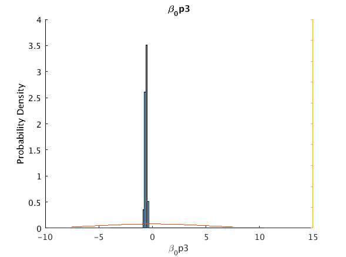

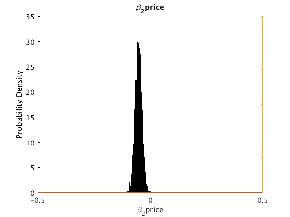 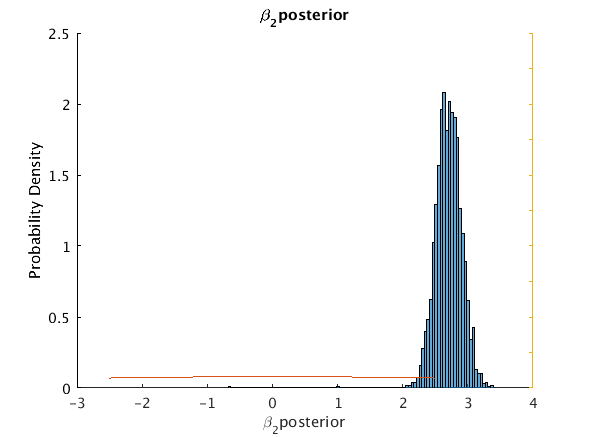 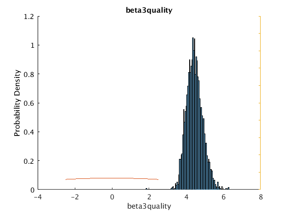 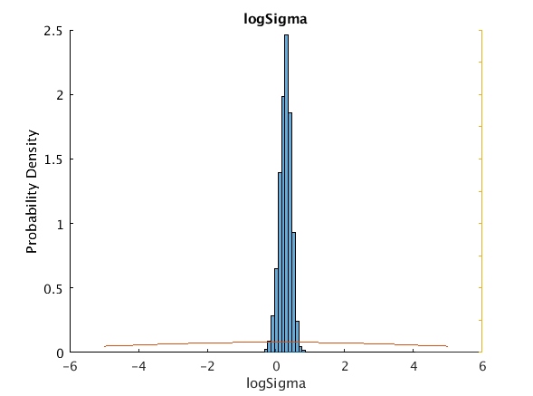 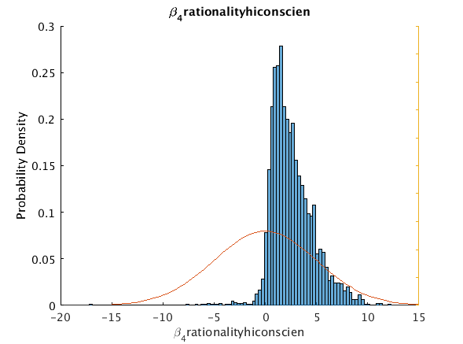 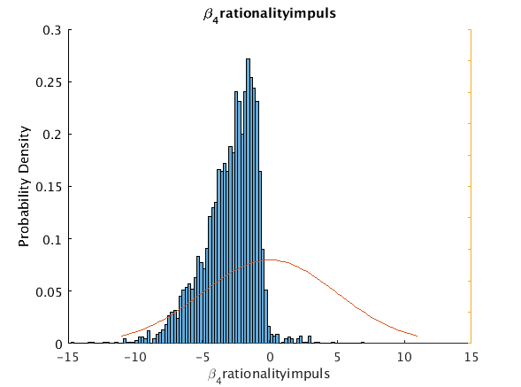 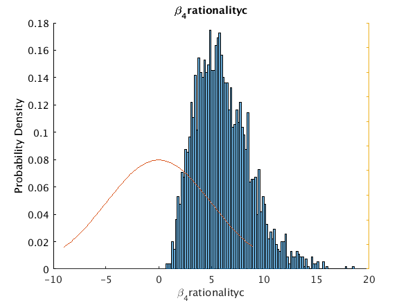 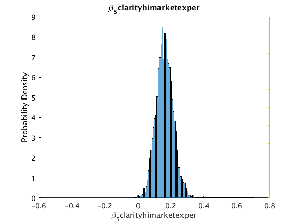 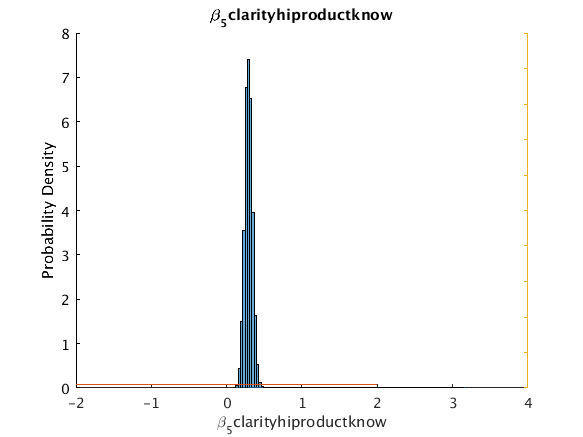 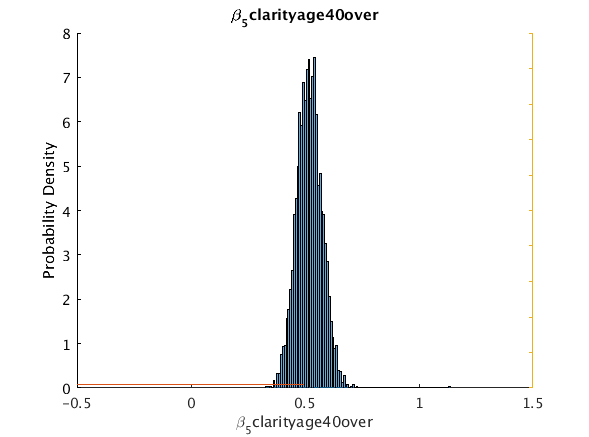 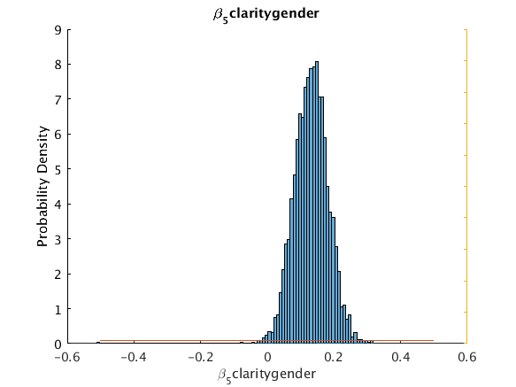 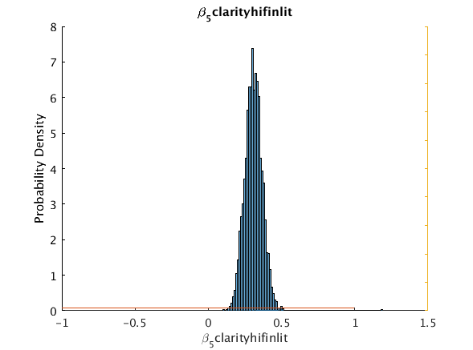 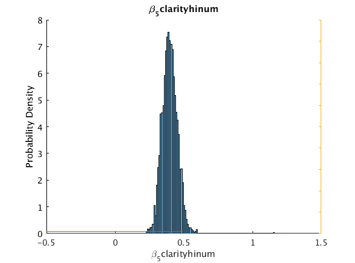 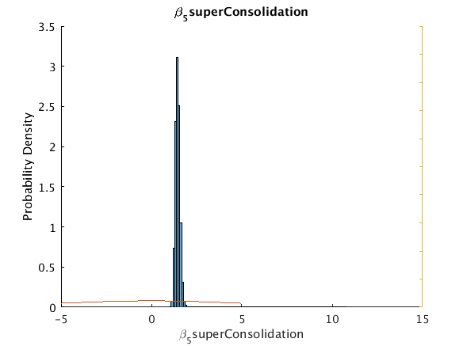 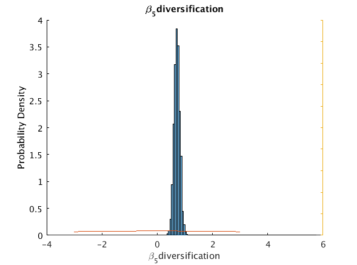 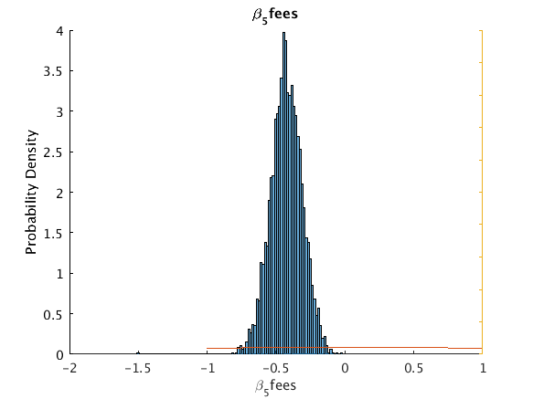 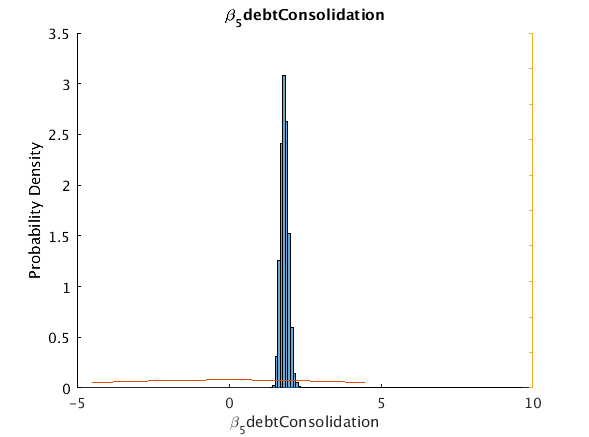
Move post-processing to CPU to avoid memory limitations
Cpar.theta=gather(Cpar.theta);
Cpar.logp=gather(Cpar.logp);
Cpar.logpinc=gather(Cpar.logpinc);
Cpar.logpw=gather(Cpar.logw);
M.data=gather(M.data);
P.d_Quality = gather(P.d_Quality);
P.d_Quality_R = gather(P.d_Quality_R);
P.d_Clarity = gather(P.d_Clarity);
P.updateRational = gather(P.updateRational);
P.updateRational_R = gather(P.updateRational_R);
thetahat = gather(thetahat);
stdhat = gather(stdhat);
meanhat = gather(meanhat);
pc2_5 = gather(pc2_5);
pc97_5 = gather(pc97_5);
gpuDevice(1);
E.gpu = false;
[~,~,tCl_ensm,tRa_ensm] = m_message(Cpar.theta,1);
topic_l=squeeze(P.d_ClarityT);
prop_cl_ensm = squeeze(sum(exp(tCl_ensm),1)./size(tCl_ensm,1));
fprintf('\n*** Clarity class membership statistics ***\n\n');
clmode = [ u_mode(100*prop_cl_ensm(:,1),100) u_mode(100*prop_cl_ensm(:,2),100) u_mode(100*prop_cl_ensm(:,3),100) u_mode(100*prop_cl_ensm(:,4),100)...
u_mode(100*prop_cl_ensm(:,5),100) u_mode(100*prop_cl_ensm(:,6),100) u_mode(100*prop_cl_ensm(:,7),100) u_mode(100*prop_cl_ensm(:,8),100)...
u_mode(100*prop_cl_ensm(:,9),100) u_mode(100*prop_cl_ensm(:,10),100) u_mode(100*prop_cl_ensm(:,11),100) u_mode(100*prop_cl_ensm(:,12),100)...
u_mode(100*prop_cl_ensm(:,13),100) u_mode(100*prop_cl_ensm(:,14),100) u_mode(100*prop_cl_ensm(:,15),100) u_mode(100*prop_cl_ensm(:,16),100)];
tableCmem_ensm = table(topic_l(:,1),topic_l(:,2),topic_l(:,3),topic_l(:,4), mean(100*prop_cl_ensm,1)', clmode', std(100*prop_cl_ensm,0,1)','VariableNames',{'SuperConsolidation','Diversification','Fees','DebtConsolidation','Mean','Mode','StdDev'});
disp(tableCmem_ensm);
disp(' ');
if ~(P.forceRational || P.forceFryer)
fprintf('\n*** Rationality class membership statistics ***\n\n');
prop_ra_ensm = squeeze(sum(exp(tRa_ensm),1)./size(tRa_ensm,1));
tableRmem_ensm = table(mean(100*prop_ra_ensm,1)',[u_mode(100*prop_ra_ensm(:,1),100) u_mode(100*prop_ra_ensm(:,2),100)]',std(100*prop_ra_ensm,0,1)','VariableNames',{'Mean','Mode','StdDev'},'RowNames',{'Rational','Fryer'});
disp(tableRmem_ensm);
disp(' ');
end
*** Clarity class membership statistics ***
SuperConsolidation Diversification Fees DebtConsolidation Mean Mode StdDev
__________________ _______________ ____ _________________ _______ ______ ________
1 1 1 1 20.526 20.333 1.538
1 1 1 0 2.2652 2.2171 0.27365
1 1 0 1 21.543 21.225 1.3283
1 1 0 0 4.2955 4.1295 0.44031
1 0 1 1 6.9111 7.0744 0.65142
1 0 1 0 1.3801 1.3525 0.18236
1 0 0 1 13.111 13.114 0.87504
1 0 0 0 4.5558 4.5689 0.43822
0 1 1 1 3.3193 3.3135 0.38788
0 1 1 0 0.6639 0.6519 0.10525
0 1 0 1 6.2902 6.2113 0.57323
0 1 0 0 2.1868 2.2094 0.25091
0 0 1 1 2.0225 1.9485 0.26
0 0 1 0 0.70222 0.7074 0.096418
0 0 0 1 6.6734 6.7568 0.59056
0 0 0 0 3.5544 3.4379 0.46251
*** Rationality class membership statistics ***
Mean Mode StdDev
______ _____ ______
Rational 83.517 83.83 5.0335
Fryer 16.483 16.17 5.0335
Prediction - in sample
u_predict(P.dataRowsInEstimation,'In Sample',spec2,thetahat);
*** Prediction - In Sample ***
For 1903 randomly chosen rows:
Model_Probability Observed_RelativeFrequency
_________________ __________________________
WTP Advisor L 0.48657 0.39779
WTP Advisor R 0.48743 0.39044
Advisor R chosen in Choice 1 0.49753 0.51971
Advisor R chosen in Choice 2 0.50499 0.5381
Advisor R chosen in Choice 3 0.50037 0.53232
Advisor R chosen in Choice 4 0.49988 0.52076
When Advisor R was observed as chosen, the model predicted probability of choosing Advisor R, averaged over 4 choicesets, was: 0.69
When Advisor R was observed as not chosen, the model predicted probability of choosing Advisor R, averaged over 4 choicesets, was: 0.29
When chosen to be paid, the model predicted probability of being paid, averaged over Advisor L and Advisor R, was: 0.51
When not chosen to be paid, the model predicted probability of being paid, averaged over Advisor L and Advisor R, was: 0.47
Prediction - out of sample
u_predict(P.dataRowsHeldOut,'Held Out Sample',spec2,thetahat)
diary off;
*** Prediction - Held Out Sample ***
For 100 randomly chosen rows:
Model_Probability Observed_RelativeFrequency
_________________ __________________________
WTP Advisor L 0.48583 0.38
WTP Advisor R 0.48057 0.41
Advisor R chosen in Choice 1 0.52162 0.55
Advisor R chosen in Choice 2 0.47018 0.47
Advisor R chosen in Choice 3 0.50913 0.55
Advisor R chosen in Choice 4 0.49556 0.56
When Advisor R was observed as chosen, the model predicted probability of choosing Advisor R, averaged over 4 choicesets, was: 0.70
When Advisor R was observed as not chosen, the model predicted probability of choosing Advisor R, averaged over 4 choicesets, was: 0.28
When chosen to be paid, the model predicted probability of being paid, averaged over Advisor L and Advisor R, was: 0.50
When not chosen to be paid, the model predicted probability of being paid, averaged over Advisor L and Advisor R, was: 0.47
end